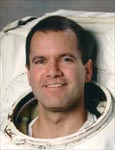

Lyndon B. Johnson Space Center
Houston, Texas 77058
|
National Aeronautics and Space Administration Lyndon B. Johnson Space Center Houston, Texas 77058 |
 |
Biographical Data |
||
Paul William Richards
NASA Astronaut
PERSONAL DATA: Born May 20, 1964, in Scranton, Pennsylvania. His hometown is Dunmore, Pennsylvania. He has two children. He is married to the former Jean Christianson of Mishawaka, IN and Chicago, IL. Paul's parents are Angela Cordaro Richards and the late James J. Richards. Jean's parents are John and Jan Christianson of Mishawaka, IN. His recreational interests include running, golf, boating, snow skiing, cooking and home repair/improvement.
EDUCATION: Graduated from Dunmore High School, Dunmore, Pennsylvania, in 1982; received a bachelor of science degree in mechanical engineering from Drexel University in 1987 and a master of science degree in mechanical engineering from the University of Maryland in 1991.
ORGANIZATIONS: American Society of Mechanical Engineers, National Society of Professional Engineers, American Institute for Aeronautics and Astronautics, American Society of Naval Engineers and the United States Naval Reserves.
AWARDS: NASA Certificate of Recognition for Patent Application (1996), Silver Snoopy Award (1994), NASA Exceptional Achievement Medal (1994), several Goddard Honor Awards (1994), several Group Achievement Awards (1994), HST First Servicing Mission Development Team, HST First Servicing Mission Extravehicular Activity Team, HST First Servicing Mission Crew Aids and Tools Development Team, HST First Servicing Mission Integration and Test Team, HST First Servicing Mission Space Support Equipment Team, NASA Manned Flight Awareness Award (1994), NASA Outstanding Performance Awards (1992, 1994 and 1995), Quality Increase Award (1993), Certificate of Outstanding Performance (1990, 1993 and 1994), Group Achievement Award UARS and GRO MMS and UASE Support Team (1992), NASA Certificate of Recognition for Invention Disclosure (1991) and NASA Certificate of Recognition for Technical Brief (1991).
EXPERIENCE: Department of the Navy, Naval Ship Systems Engineering Station, 1983 to 1987. Transferred to NASA Goddard Space Flight Center (GSFC) in 1987. Worked in the Verification Office, Electromechanical Branch, Robotics Branch and Guidance and Controls Branch, all within the Engineering Directorate. Senior EVA Tool Development Engineer for the Hubble Space Telescope (HST) Servicing Project. Project Manager for HST EVA crew aids and tools. Program Manager for HST EVA Hardware. Responsibilities included the budget, schedule, design, analysis, fabrication, test, and integration for breadboard, WETF/NBS, engineering, and flight hardware, documentation, and review process. Additional duties included systems engineering support for the HST WETF/NBS Servicing Mission Simulations as a utility diver and EMU suited subject.
NASA EXPERIENCE: Selected by NASA in April 1996, Richards reported to the Johnson Space Center in August 1996. Having completed 2 years of training and evaluation, he is qualified for flight assignment as a mission specialist. Richards was initially assigned to the Computer Branch working on software for the space shuttle and the International Space Station. He next served in the Astronaut Office Shuttle Operations Branch assigned to support Payload and General Support Computers (PGSCs) and the Shuttle Avionics Integration Laboratory (SAIL). Richards flew on STS-102 and has logged more than 307 hours in space, including 6.4 EVA hours. He was assigned as a backup crewmember for ISS Expedition-7. Richards left NASA in February 2002 to become an aerospace consultant. He also served on the Board of Directors for the Maryland Space Business Roundtable and currently serves on the Board of Advisors for Drexel University's College of Engineering. In 2004, Richards returned to NASA GSFC as the Observatory Manager for the Geostationary Operational Environmental Satellite (GOES-R Series). The GOES-R series is the next-generation of advanced weather satellites being developed by the National Oceanic and Atmospheric Administration (NOAA) in partnership with NASA.
SPACE FLIGHT EXPERIENCE: STS-102 Discovery (March 8-21, 2001) was the eighth shuttle mission to visit the International Space Station. Mission accomplishments included the delivery of the Expedition-2 crew and the contents of the Leonardo Multi-Purpose Logistics Module, the return to Earth of the Expedition-1 crew as well as the return of Leonardo, the reusable cargo carrier built by the Italian Space Agency. Richards performed an EVA totaling 6 hours and 21 minutes. Mission duration was 307 hours and 49 minutes.
FEBRUARY 2012